Predicting executed monitoring performance with optimistic planning and real online learning
Kaleb Ben Naveed Department of Robotics · University of Michigan Model-based diffusion with a learned disturbance model
An informative plan can lose its value in execution
The central issue is that a nominally informative trajectory may not deliver its predicted monitoring performance when executed under uncertain disturbances.
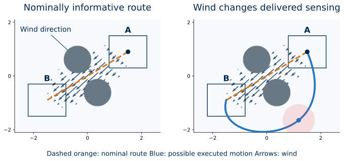
1. Wind-aware planning Predict how wind and controller intervention change motion, arrival time and sensing.
2. Optimistic planning with online learning Try favorable plausible alternatives and learn from actual execution.
Robot state, control and spatial disturbance
Generic nominal robot model
Execution under spatial wind
The planner must predict motion under the unknown disturbance.
Symbol
Meaning
Robot state
Admissible control input
Robot position in the coverage space
Map from state to position
Nominal dynamics
Dynamics including the disturbance
Fixed, unknown physical wind field
Paper notation: Eq. (4) writes the disturbance-dependent dynamics as ; here the subscript distinguishes it from the nominal model.
Presentation structure
1Introduction Why nominal informativeness can differ from delivered monitoring.
2Preliminaries Clarity, POAM, robust policy values and model-based diffusion.
3Problem formulation Disturbance-aware monitoring and optimistic performance preference.
4Method Execution prediction, optimistic costs, adapted sampling and real learning.
5MBD comparison The target, importance correction and retained reverse update.
6Planned evaluation Baselines and ablations; prior method and results in the final archive.
: Gaussian distribution with mean and covariance . : measurement-noise covariance.
The wind belief summarizes what those observations imply:
: predicted wind mean at position . : covariance between wind at and .
: a second position; : a position argument. The label denotes wind; it is not a power. Covariance expresses remaining uncertainty.
POAM — Probabilistic Online Attentive Mapping — updates this spatial belief as observations arrive.
Chen, Liu and Khardon, POAM, RSS 2024. The next slides explain one scalar wind component; vector components are modeled separately here.
POAM uses spatial correlation to connect observations
For one scalar wind component, use a Gaussian process (GP): any finite collection of wind values has a joint Gaussian distribution.
: uncertain wind component at . : prior mean, before observations. : prior covariance between positions.
: kernel parameters. The kernel controls how an observation at one position influences predictions elsewhere.
The attentive kernel combines spatial correlation lengths:
: number of kernel components; : component index. : correlation length of component . : prior variance scale.
: normalized component weight at . : transpose; : Euclidean norm. Larger links more distant positions.
Chen, Liu and Khardon, POAM, Sec. III-B. The following slide defines the location-dependent weights.
What the attentive weights mean
At each position, a neural network produces a nonnegative vector . Normalize it to obtain
Which length scales apply here? Large gives component more influence at position .
How similar are the two regions? reduces correlation when their weight vectors differ.
Example with two components: one long correlation length describes smooth wind; a shorter one describes more rapid spatial variation. The weights can favor different components in different regions.
These are kernel weights over spatial length scales. Later, MBD uses different weights over sampled decisions.
: vectors with real entries. includes the network and kernel parameters. The numerical visual uses specified illustrative weights.
POAM predicts wind through a sparse Gaussian posterior
Choose representative inducing positions . They are model locations, not additional observations. Collect their wind values in .
: mean vector of the inducing values. : their posterior covariance. : prior covariance matrix at .
: vector of covariances from to . : interpolation-coefficient vector. : matrix inverse (computed by a solve).
The residual retains uncertainty that the finite inducing values cannot represent. Local wind standard deviation is .
POAM, Eq. (4). Time is suppressed on these slides: every posterior is the current one.
How a new observation changes the POAM posterior
At , observe . For this scalar component, the measurement-noise variance is (the scalar counterpart of ). Hold the kernel and inducing positions fixed.
: interpolation coefficients at the observation. : gain vector, determining how much each inducing mean responds.
: innovation, the measured wind minus its predicted mean. Superscript means after this observation.
Mean A nonzero innovation changes the wind estimate. A zero innovation leaves it unchanged.
Covariance Uncertainty decreases in correlated inducing values. Recompute and from .
Fixed-representation sparse variational Gaussian update; POAM Eqs. (7)–(8), (19)–(21). Full online POAM can also refit its kernel and relocate inducing positions.
Watch POAM learn a spatial wind model
1Start from a spatial prior
2Receive one wind observation
3Update the sparse posterior
4Predict at an unobserved position
5Assimilate a second observation
6Assimilate a third observation
: belief after observations; : wind standard deviation. The numerical example fixes the kernel and inducing positions; wind uses normalized units.
Why position alone is not enough
To predict a future constraint violation, we must specify both the dynamics and the future control inputs.
Consider a robot moving toward a wall. Let be its position, with the wall at .
Two robots at have the same , but a faster robot needs more distance to stop.
A geometric constraint tests the current state.
A policy value Tests the largest future value of when a specified control law is followed.
That specified control law is the design policy, denoted . It makes the future-motion test well defined.
Policy-value construction: Knoedler et al., Safety on the Fly, Sec. III-A.
Example: evaluate the policy “brake until stopped”
Illustrative model: , , , initially . Use until , then , where is braking acceleration.
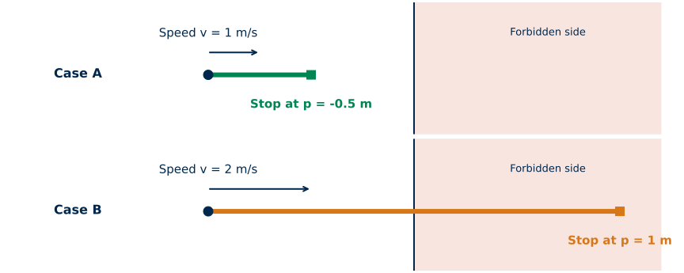
Case A: , , . : braking stops before the wall.
Case B: , , . : the braking trajectory crosses the wall.
The value depends on the chosen policy. Wind, actuator limits or a different braking law change this prediction.
From the example to a robust policy value
Let be the state reached from after time when following under disturbance signal .
: constraint function for constraint ; violation means . : disturbance signals considered in the source formulation.
Inner supremum: largest constraint value over time. Outer supremum: largest such value over disturbances.
All trajectories included in this test satisfy constraint .
At least one trajectory in the test violates the constraint under this policy.
RPCBF = robust policy control barrier function. Knoedler et al., Eqs. (6), (10). Their numerical construction uses a finite horizon, sampled disturbances and spline maxima; guarantees require additional conditions.
A policy value can guide the applied input
The task policy requests . The execution controller chooses the input closest to it while meeting a value-rate condition:
The condition is imposed for every constraint and every disturbance included in the controller’s test.
: actuator input set. : sensitivity of the value to state. : controller value-rate coefficient.
If satisfies the conditions, it is applied unchanged. Otherwise, the controller selects a different input.
This changes motion and sensing. Our planner predicts that controller response when evaluating monitoring performance.
RPCBF motivates the policy-value construction. The common-input inequalities shown here specify our sampled adaptation; the original paper states a separate robust condition.
MBD example: optimize one path-height parameter
Model-based diffusion (MBD) uses model-evaluated costs to refine decision vectors. First consider a scalar decision : the height of a path between a fixed start and goal.
Here indexes progress along the path; it is not physical time. The midpoint has height .
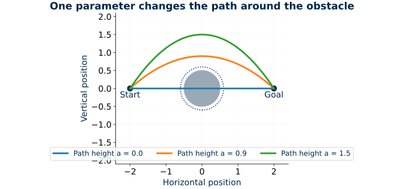
Minimize path length, subject to clearance from the obstacle. Each sampled value of produces one path to evaluate.
Teaching example only. The monitoring method will instead optimize a nominal policy parameter vector.
MBD: prefer lower-cost decisions, then smooth the density
Let denote a decision vector. In the path example, is a scalar path height. The model evaluates its cost .
: target probability density over decisions. : feasible decision domain. : 1 if ; 0 otherwise.
: temperature, in cost units. Smaller favors lower costs more strongly. : proportional; density is normalized to integrate to 1.
Example is path length. contains heights in whose paths satisfy the clearance requirement.
Why introduce noise? The target can have separated high-density regions. Gaussian smoothing produces a sequence of less concentrated densities.
MBD estimates the direction toward higher density using model evaluations, without training a score network.
Pan et al., MBD, Eq. (2). A valid target requires a finite, positive normalizing integral.
MBD noise schedule: what alpha controls
Forward noise defines the densities that MBD will traverse in reverse:
: clean decision; : noisy decision at level . : diffusion level; : total levels. : probability density of .
: signal-variance retention per forward step. : cumulative signal-variance retention. : the clean, zero-noise endpoint.
: standard Gaussian noise vector. : identity matrix of the decision dimension. : index in the product defining .
scales the clean decision. scales the added noise. Example: gives scales and .
Forward: , more noise. MBD optimization: , less noise. Diffusion level is not physical time.
Pan et al., Eqs. (3)–(4). The controller coefficient is denoted here, separately from diffusion .
One MBD iteration: sample, evaluate and weight
At level , draw decision vectors around the current noisy vector :
: number of sampled decisions per level. : sample index; : one sampled decision. These samples are in clean decision coordinates.
Proposal mean: . Proposal covariance: . In the scalar example, .
Evaluate each sampled decision with the model. Then normalize its target-density weight:
: nonnegative cost weight, with . : summation index over the same samples.
: cost-weighted decision mean. Infeasible decisions have zero weight. The mean itself need not be feasible.
Pan et al., Eqs. (8)–(9). counts decisions; POAM’s covariance matrix is . If all weights vanish, recovery is required before normalization.
Use the weighted mean to refine the noisy vector
The score points toward increasing log density. Here means a gradient with respect to the noisy decision vector.
: score estimate from the model evaluations. The hat denotes an estimate, not the exact score. : updated noisy decision at the next level.
First add the score correction to . Then divide by to change levels. No derivative of the rollout cost is required.
Substituting the score reveals exactly what this update does:
The next sampling mean is . Its covariance decreases to .
Pan et al., MCSA Eq. (6) and score Eq. (9). At , and reverse iterations end. This deterministic update does not guarantee a feasible mean.
Watch MBD refine paths in a simple environment
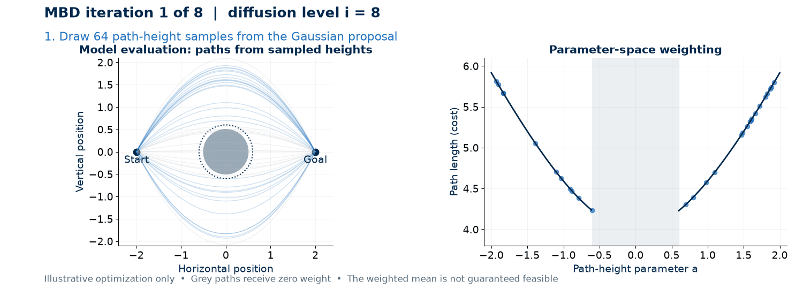
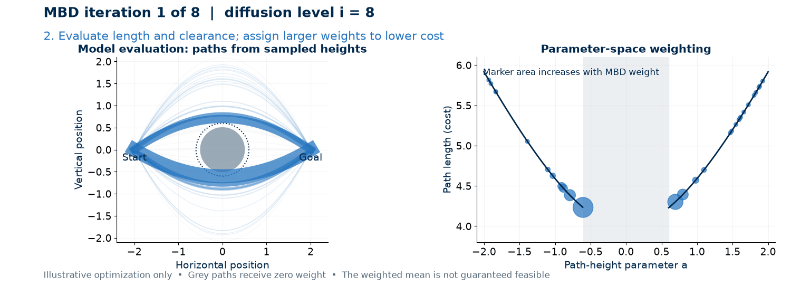
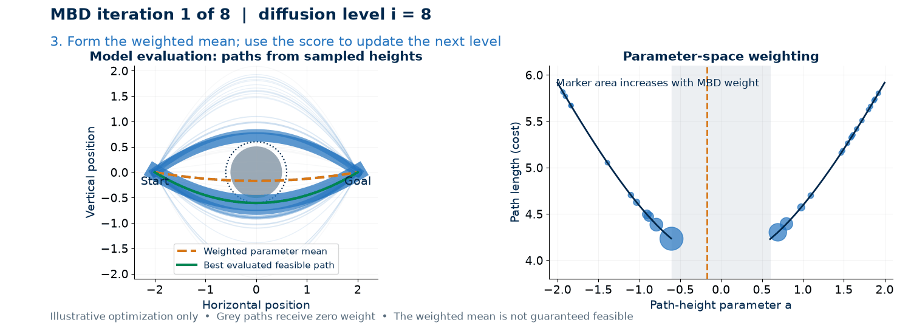
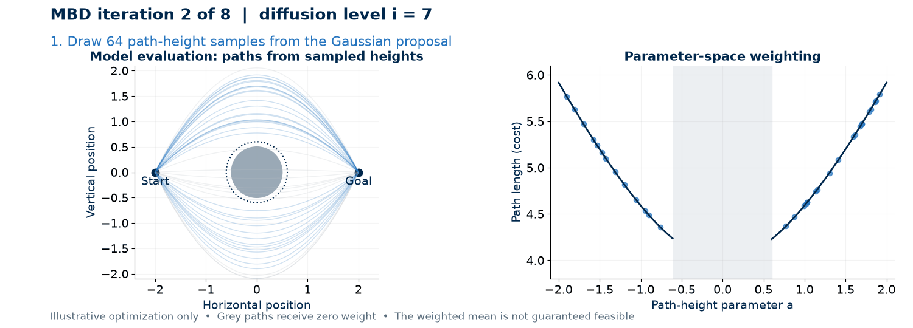
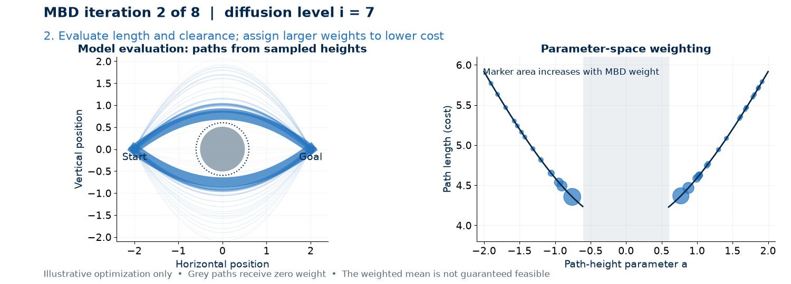
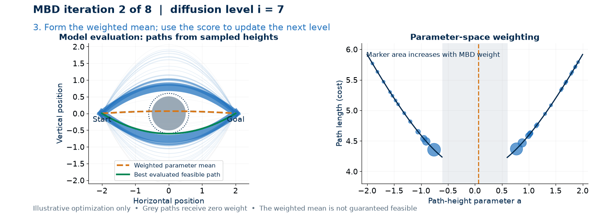
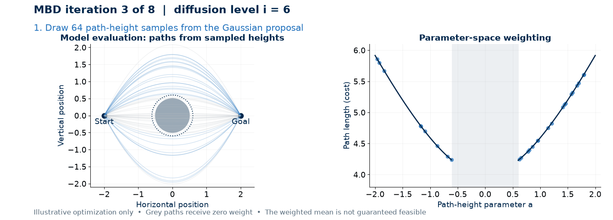
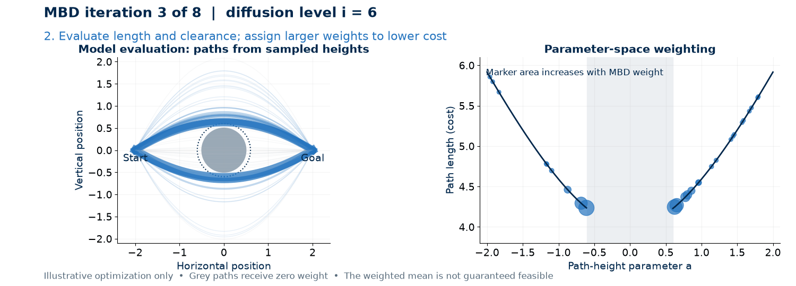
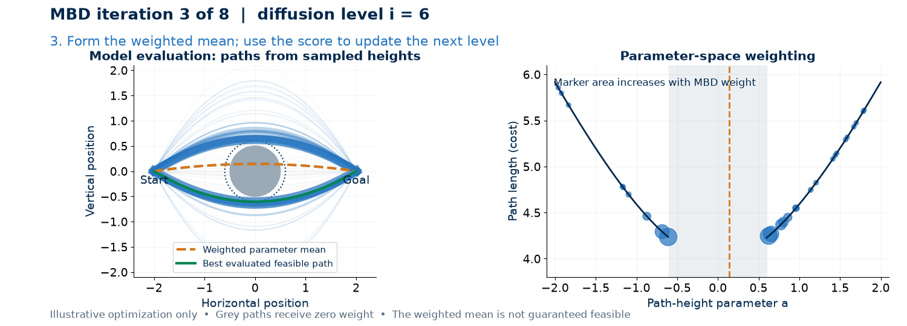
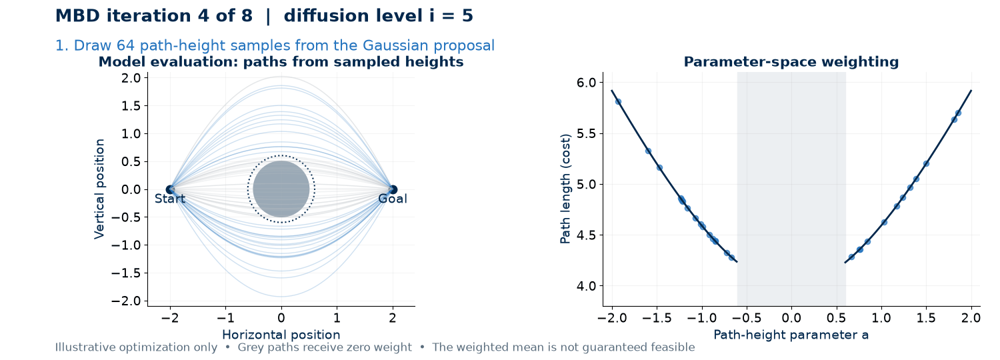
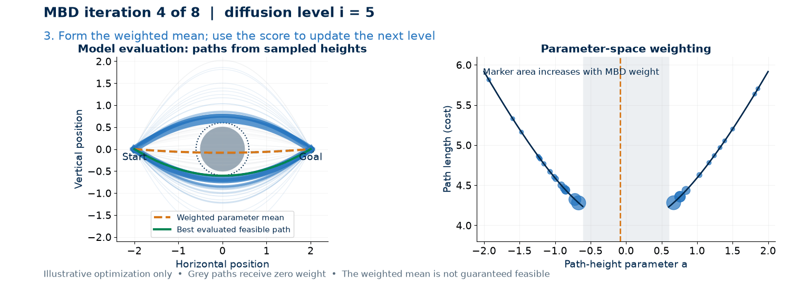
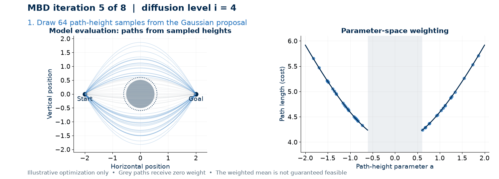
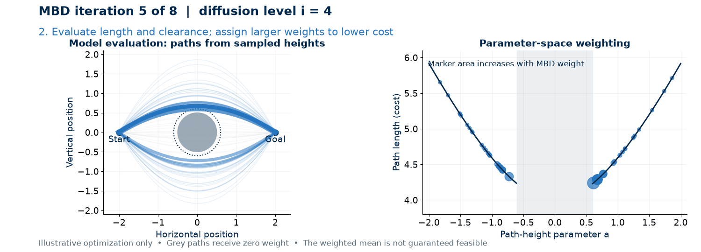
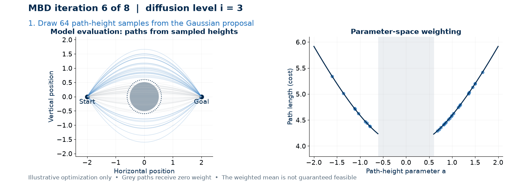
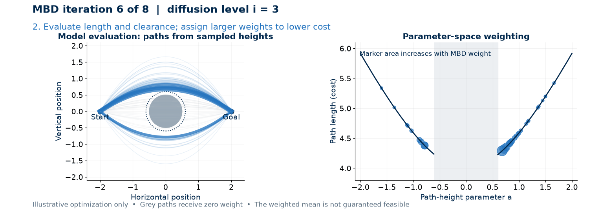
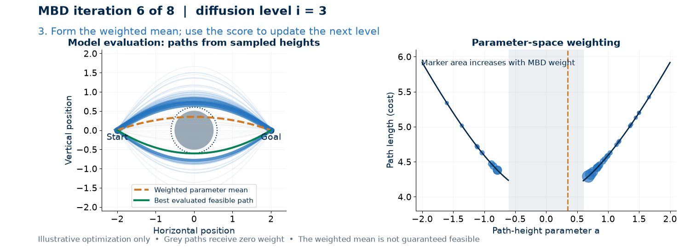
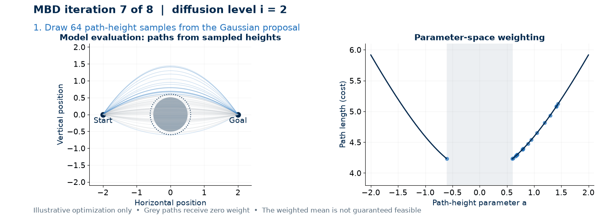
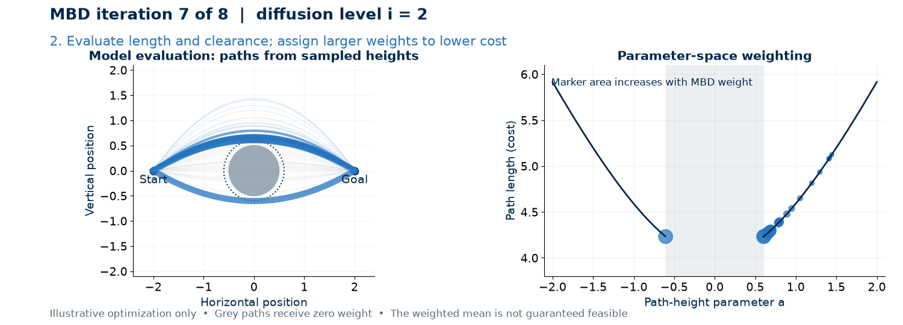
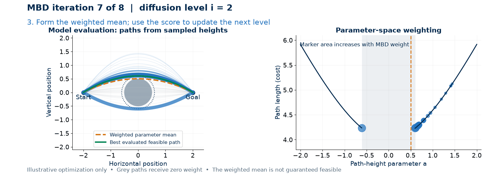
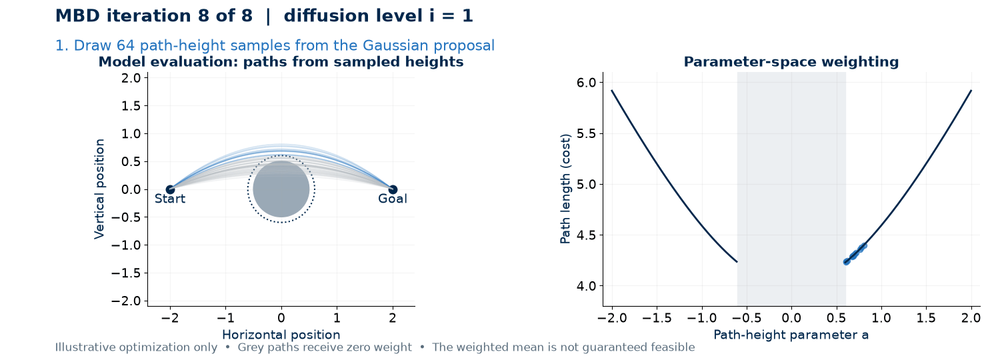
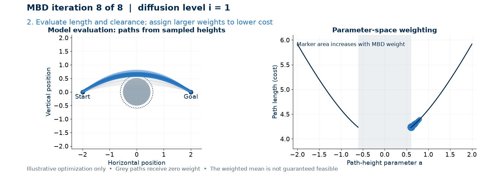
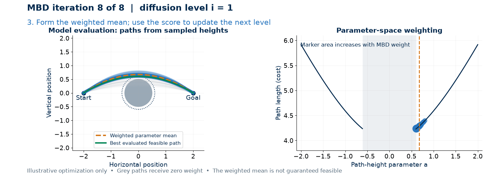
Starts paused. Use Next step or the timeline to move through all eight iterations. Blue: evaluated paths · Orange dashed: weighted parameter mean · Green: best evaluated feasible path.
One MBD iteration, step by step
1Read the current noisy vector
2Sample 64 path-height values
3Construct each path
4Evaluate length and clearance
5Normalize cost weights
6Compute the weighted mean
7Estimate the score
8Denoise: move → rescale → resample
Step 8 has four frames: score correction, rescaling, next sampling distribution, and new paths. Nothing here is physical robot motion.
Problem formulation
3
Disturbance-aware monitoring with optimism over plausible executions.
Current information, policy decision, constraints and monitoring cost
The decision at one replanning time
At physical time , the robot knows its state , clarity vector , disturbance belief , environment geometry and target clarity .
Choose a nominal policy parameter vector :
: physical replanning index. : bounded policy parameter domain. : one vector that specifies a nominal policy.
: prediction horizon. : elapsed prediction time. : control input requested by that policy.
The execution filter determines the applied input . Its resulting motion determines sensing and clarity.
One sampled parameter vector specifies one policy to evaluate. A trajectory is an output of that evaluation.
Monitoring cost and admissible motion
For a possible spatial disturbance field , predict the executed state and clarity:
: position extracted from state. : state or environment constraint indexed by ; positive values indicate violation.
: admissible actuator inputs. : sensing quality, measurement noise and monitored-process noise, as defined in the preliminaries.
Lower cost means less accumulated monitoring deficit along the predicted executed motion.
The method checks finitely many disturbance fields and numerical trajectory points. Those checks do not certify all possible executions.
Expected performance and optimistic performance
Disturbance-aware expected-cost criterion: choose a policy with low average monitoring cost under the current disturbance belief.
Proposed optimistic criterion: choose a policy with low monitoring cost among a specified fraction of its favorable plausible executions.
Both criteria use the same disturbed dynamics, execution filter, sensing model and motion checks.
Inside prediction The posterior remains fixed. The controller still responds to every predicted state.
After real execution Actual observations update POAM. The next planning call uses that updated posterior.
Optimism can favor trying an uncertain alternative. A later monitoring benefit remains an experimental hypothesis.
Method
4
Predict executed monitoring, score favorable outcomes, then refine policy parameters.
Execution prediction, optimistic objective, adapted MBD proposal and real learning
Architecture of the proposed method
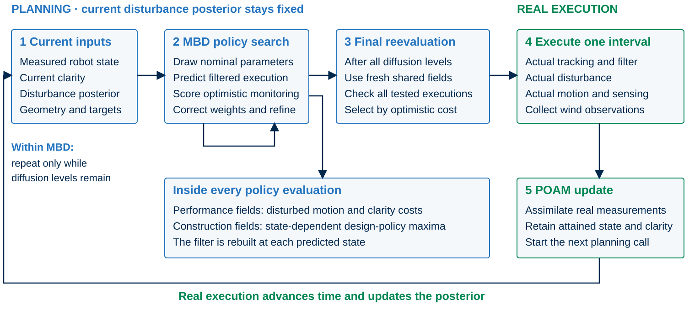
Two sets of disturbance fields serve different purposes
Let be the spatial-field distribution represented by the current POAM belief .
Field set
How it is obtained
What it evaluates
Performance fields ,
Draw from
One complete monitoring cost per field
Construction fields ,
Use the execution filter’s sampling rule
Largest constraint value in design-policy rollouts
Each realization is a coherent spatial function. Its value changes with position, and it remains the same field throughout a rollout.
Optimism acts on monitoring costs. The filter retains its adverse construction samples.
Fix these fields or their base random draws within one planning call. Recompute trajectories and constraint values at each queried state.
Nominal and design policies have different roles
Policy
Role
Chosen by MBD?
Requests the inputs that pursue monitoring
Yes, through
Supplies a specified continuation for evaluating future constraint values
No
Example: the nominal policy requests motion toward an inspection region. The design policy predicts braking from the current position and velocity under the tested disturbances.
A predicted braking violation can require the execution filter to change the nominal request.
The design-policy rollout constructs a constraint test. It is separate from the monitoring rollout being scored.
RPCBF-inspired construction. The generic method retains the chosen design policy and nominal-policy representation.
Construct a constraint value at the queried state
For each construction field, start at the currently queried state and follow the design policy:
Fit a cubic spline through the values of . Compute
: design-policy trajectory. : design-policy evaluation horizon. : time within that short rollout.
: interpolated constraint value. : largest tested value. : state sensitivity.
Maximize the spline over time, including interior extrema. A maximum over integration nodes alone is a different approximation.
Adapted from Knoedler et al., Algorithm 1 and Eqs. (18)–(21). A closed finite interval includes its endpoint in this presentation.
Compute the applied input at that state
For control-affine disturbed dynamics, write
With a polyhedral actuator set , the execution filter solves the quadratic program (QP)
: uncontrolled drift; : input matrix. : tested disturbance at this state. : trial input; : resulting input map.
: value-rate coefficient. One input must satisfy all listed inequalities. A feasible nominal input remains unchanged.
This is our explicit finite-sample formulation inspired by RPCBF, using a linear value-rate function. It is not a verbatim expansion of the paper’s Eq. (19) or a general safety certificate.
A fixed belief still gives a changing controller
Each performance realization has its own reached state. At every predicted control step:
Evaluate the nominal policy at that reached state.
Rebuild the design-policy trajectories, spline maxima and state gradients.
Solve the QP at that state, then propagate motion in that performance field.
Update clarity from the resulting position.
Different wind fields can produce different states and interventions even though the posterior is fixed.
The hidden performance field enters the simulated physical dynamics. It is not supplied as known wind to the nominal policy or filter.
Each performance field gives one monitoring cost
For the same policy parameters , every performance prediction starts from and accumulates clarity deficit:
: cost in performance field . : clarity along that field’s executed trajectory.
: sampled expected cost. : number of performance fields.
The nominal route can be short while the predicted execution is slow, deflected, or repeatedly interrupted by the filter. Those effects change sensing and therefore .
The cost already includes travel and monitoring consequences. No separate wind-variance or filter-intervention reward is added.
Optimism selects a favorable fraction of costs
Sort the costs for one policy: . Choose a fraction and define , .
: fraction of favorable outcomes retained. : number of fully included sorted costs. : fractional weight on the next cost.
Omit the fractional term when . : recover the expected cost. : use the minimum sampled cost.
Smaller expresses more optimism about monitoring performance.
Known strong wind remains in the model. If all fields give the same cost, optimism does not change that cost.
Example: an uncertain policy can become preferable
Illustrative costs only. Four equally weighted performance fields, with all policies passing the motion checks. Lower is better.
Policy
Sorted costs
Expected cost
Optimistic cost,
Established route
10
9.5
Uncertain alternative
12
7
Poor alternative
15
12
Known costly route
12
12
The uncertain alternative loses on average and wins under the favorable-half criterion. The poor alternative remains unattractive even in its favorable outcomes.
This preference is deliberate optimism. The table does not demonstrate a later learning benefit.
Numerical acceptance applies to every tested field
Let only when the policy passes all declared numerical checks in every performance rollout:
Finite state propagation and monitoring cost.
No detected state-constraint violation.
Successful QP execution without an infeasibility fallback.
Otherwise and the policy receives zero MBD weight.
The lower tail changes cost preference. It never hides a failed unfavorable realization.
Planning must reproduce the actual filter and fallback behavior. A finite sampled acceptance test does not establish continuous-time or all-disturbance safety.
The optimistic target density
MBD’s clean optimization variable is the nominal parameter vector: .
: target density at planning time . : normalizing integral. : indicator of the bounded parameter domain.
: numerical acceptance indicator. : MBD cost temperature. : optimistic fraction, separate from .
A bounded domain and an accepted subset of positive volume with finite cost give a positive, finite normalizer.
The density and weighted mean are over policy parameters. Filtered inputs and executed states remain rollout outputs.
Pan et al., MBD Sec. 4.1 supplies the generic target construction. The optimistic monitoring criterion is the proposed addition.
The ordinary MBD proposal remains the reference
Retain the forward-noise model from the preliminaries:
At level , its Gaussian proposal in clean parameter coordinates is
corrects for the changed sampling density. : number of fresh samples in the batch. : sample index in the denominator.
The target changes the preference. The corrected proposal changes how efficiently that target is searched.
Use the full mixture density in the denominator. Old archive entries guide sampling but are not appended as if drawn from this batch.
Score estimation and the next diffusion level
Use the corrected parameter mean in the original MBD score and reverse update:
: estimated gradient of the noisy target’s log density. : noisy parameter vector for the next level.
: clean endpoint. The next ordinary proposal centers on with its reduced noise variance.
If : construct the next mixture and draw a new batch. If : diffusion ends and final policy reevaluation begins.
A weighted mean may describe a different, infeasible route. Evaluate the final vector before accepting it.
Evaluate weights in log space. Outside : zero weight, without clipping. If all weights vanish, record failure and retry or retain an evaluated feasible policy.
Selection uses fresh performance fields
After diffusion, collect the leading accepted archive policies, the expected-cost incumbent and the retained previous-plan continuation. Also evaluate the final diffusion vector before admitting it.
Reevaluate these policies with a fresh, shared bank of performance fields. Use the same execution filter and acceptance checks.
: policies accepted on the fresh bank. : optimistic score recomputed on that bank.
The same new fields are shared across policies. Keep the optimistic criterion for selection; changing to expected cost would alter the decision rule.
This is a selection check, not an unbiased final test or a probabilistic safety certificate. If none passes, use the declared runtime fallback and record a planning failure.
Real measurements change the next planning call
Execute the selected policy only for the next replanning interval , using the actual execution filter.
Collect disturbance observations along the actual trajectory, then update POAM:
: real disturbance measurements and their locations collected during the interval.
: attained state and clarity. The next planning call starts from these attained quantities.
The updated posterior changes both the performance-field distribution and the filter construction at the next call.
Learning occurs through executed motion. The planning rollout contains no hypothetical posterior updates.
Proposed method, step by step
Read current state, clarity and posterior
Predict each policy in fixed sampled fields
Compute its optimistic cost
Adapt sampling around qualifying policies
Correct weights and denoise
Check and select after optimization
Execute, observe and update the posterior
Illustrative arithmetic and process diagram. This walkthrough is not a planner run or a monitoring result.
Why optimism could help a long mission
An uncertain route can look worse on average yet offer favorable plausible monitoring. Optimism can make the robot try that route earlier.
During the early visit
During later monitoring
Real motion exposes the robot to an uncertain disturbance region.
The updated spatial model changes later route and control decisions.
Travel or imperfect tracking may increase monitoring deficit.
Repeated useful visits may repay that early cost.
The hypothesis needs a persistent disturbance pattern, informative measurements, usable spatial generalization and enough remaining mission time to exploit the information.
The full-mission deficit must show whether the later gain actually repays the early loss.
The criterion does not predict observation informativeness or future belief changes. Optimism can also favor an alternative that teaches little or remains costly.
Early optimism needs an explicit schedule to fade
The supplied method uses a specified . By itself, this does not force optimism to decrease with physical time. Real learning may narrow the distribution of monitoring costs, but that effect is not guaranteed.
Optional ablation for the early-optimism hypothesis:
Nominal dynamics without the disturbance or filter response
No added constraint filter
Wind-blind planning with safety filter
Same nominal planning as wind-blind
Same current-belief filter as proposed
All methods retain the same vehicle, actuator bounds, sensing model and low-level tracking law. The two blind planners ignore disturbance inside their planning objective.
Primary replay: proposed versus disturbance-blind planning. The filtered blind baseline remains in the quantitative evaluation.
Baseline convention for review: runtime wind estimation and tracking compensation are shared; the unfiltered baseline differs by omitting the added constraint filter. Report collisions and failures without removing those runs.
Ablations separate optimism from sampling
Ablation
Monitoring criterion
Parameter sampling
Question
Expected-cost disturbance-aware
Full mean,
Ordinary Gaussian
Does optimism help?
Optimistic disturbance-aware
Lower tail, fixed
Ordinary Gaussian
What does optimism alone do?
Proposed
Same lower tail
Corrected mixture
Does proposal adaptation help?
Fading optimism
grows toward 1
Corrected mixture
Is early optimism sufficient?
Use the same runtime filter, real learning and policy representation across these four comparisons. Compare both equal rollout budgets and measured computation time.
Also vary the number of performance fields , optimistic fraction , mixture fraction and prediction horizon . Two fields with reduce to the minimum of two costs.
Evidence needed for a long-term learning benefit
Measure cumulative clarity deficit throughout the mission, per-region deficit, completed visits, tracking error, constraint failures and computation time.
To explain the mechanism: record the selected route, its sampled cost distribution, actual wind observations, posterior error and later changes in decisions.
To test the learning explanation: compare real posterior updates with a frozen-posterior diagnostic while holding the remaining algorithm fixed. A lower uncertainty estimate alone is insufficient evidence.
Use independent mission realizations and seeds, including failures. Report early cost, late cost and total cost.
The fresh selection bank is part of the planner. Final evaluation requires separate disturbance realizations. Account for missed replanning deadlines instead of pausing physical time during planning.
Method assessment before implementation
The specification is mathematically coherent: a defined optimistic target, a state-dependent execution model and an importance-corrected proposal.
The intended payoff is conditional: an early experiment can improve later monitoring when its observations change useful future decisions. The optimistic criterion does not calculate that payoff.
Important failure modes: favorable-tail sampling error, poorly calibrated wind beliefs, repeated optimism about uninformative regions, inadequate route representation and excessive computation time.
The next stage is to test the hypothesis. Existing simulations provide no evidence for this revised algorithm.
The former anticipated-learning method, its interactive explanations and its A/B results are preserved after the source slide in the archive.
Sources for the revised method
Paper Pitch Development, supplied 20 October 2026: optimistic cost, two field roles, adapted proposal and execution loop.
Pan et al., Model-Based Diffusion for Trajectory Optimization (2024): Eqs. (2), (6), (8), (9) and Algorithm 2. Paper
Knoedler et al., Safety on the Fly (2025): policy-value construction, cubic spline maxima and runtime control filtering.
Chen, Liu and Khardon, POAM (RSS 2024): online spatial belief model. Paper
The optimistic criterion and proposal adaptation are proposed additions. The source papers do not establish their monitoring benefit.
Archived method
A
Previous anticipated-learning and value-of-learning formulation.
Original equations, interactive explanations, A/B results and implementation notes retained for reference
Archived problem formulation
3
Two planning problems with the same monitoring objective.
Define the decision variable → hold the wind belief fixed → anticipate observations
Define the decision and the planning horizon
At time , the planner knows the robot state , clarity vector , wind belief , environment geometry and target clarity .
Decision: choose parameters of a nominal control policy:
: policy parameter domain. : planning horizon. : elapsed time from the start of this prediction.
: input requested by the task policy. : input applied by the execution controller. , .
The decision is a nominal policy. Its predicted motion and sensing determine the monitoring cost.
Shared motion constraints and execution controller
Both problems require admissible policy parameters, actuator inputs and predicted states:
encodes an environment or state constraint. For example, outside a circular exclusion region, , with center and radius .
The controller from the preliminaries determines the applied input:
The value and tested wind values depend on the available wind belief. The inequality is imposed for each constraint and tested wind value. Here is the trial input; is the selected input.
The planner evaluates the motion produced by this controller. It cannot choose the nominal route and assume that route is executed.
The numerical method uses finite field samples and time checks. If the controller’s inequalities are infeasible, its prescribed relaxation must be included in prediction. These tests do not establish safety for every possible wind field.
Problem 1: wind-aware planning with a fixed predicted belief
Choose a nominal policy that minimizes the monitoring deficit of its predicted execution under uncertain wind.
subject to the dynamics, initial conditions and admissibility requirements:
The controller on the preceding slide chooses from the request .
A possible physical field is drawn from the current belief. Requirements apply to predicted executions; numerical enforcement checks the sampled fields and times. Real measurements still update the belief between planning calls.
Problem 2: wind-aware planning with anticipated learning
Choose the policy while predicting how future observations change later inputs, motion and monitoring.
Retain all motion and sensing constraints from Problem 1:
The same controller chooses , now from . At a sensing time, and
Continue from the reached using the updated belief. The objective and admissibility requirements are unchanged.
is measurement noise. The belief starts at and is retained between updates. The expectation includes fields and observation noise; there is no separate learning reward.
Method: from policy parameters to delivered monitoring
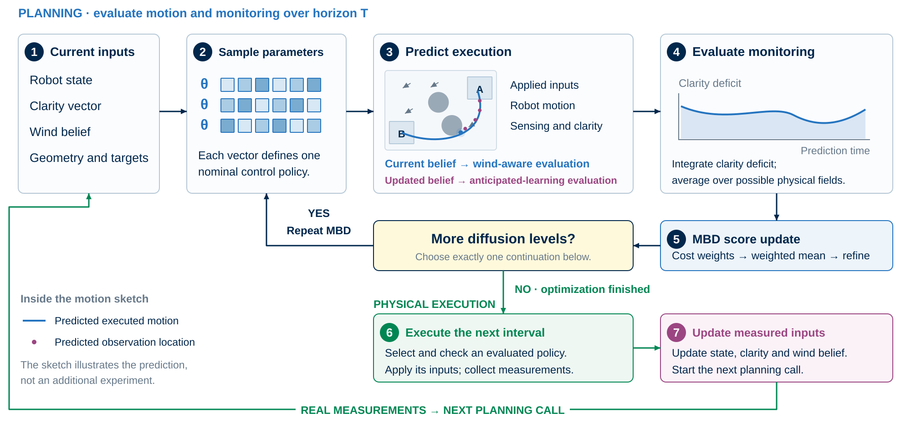
First distinguish the requested input from the applied input
For a given parameter vector , the nominal policy requests
The execution controller chooses using that request, the current state and the wind belief. The robot then evolves according to
Example The task policy requests motion toward a monitored region. Near an obstacle, wind and current velocity may require braking or turning.
Planning consequence The robot may arrive later or sense different cells. Predicting only the requested motion misses that cost.
Next we construct the execution controller’s wind-dependent constraint test, then use its chosen input in the motion prediction.
Here is a possible physical wind field. The controller receives the belief, not privileged knowledge of that field.
Predict future constraint values under a fixed policy
Use the constraint functions and a fixed design policy from the preliminaries. MBD optimizes , the parameters of the nominal task policy ; is fixed.
Draw wind fields from the belief. Starting at , follow under each field. Denote the resulting state trajectory by .
Take the largest constraint value over time, then over fields:
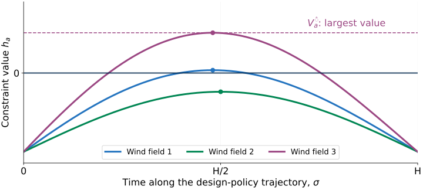
: design-policy evaluation horizon. : time within that prediction. : wind-field index.
The belief changes the tested trajectories and their largest constraint value.
Illustrative traces. Finite sampled policy-value construction inspired by Knoedler et al.; spline maxima approximate the time maximum.
Predict which input the execution controller will apply
At the predicted state, choose the input closest to the nominal request:
subject to, for every constraint ,
is the trial control input in this optimization; is its selected value. The belief is held fixed when taking the state gradient .
If the nominal input satisfies every inequality: . Otherwise: the controller changes the input to meet the tested conditions, when feasible.
Wind affects both the value and the predicted rate of change. It can therefore change the applied input even for the same nominal request.
Control-affine dynamics give a quadratic program. If the inequalities are infeasible, the execution model must reproduce the controller’s constraint relaxation; the planner does not assert safety.
Propagate the applied input, then compute sensing
The chosen input and the possible physical wind field determine the next robot state:
That state determines sensing quality and the clarity evolution:
At each prediction step: recompute the nominal request and the execution controller’s response at the reached state.
Accumulate monitoring cost: integrate the mean clarity deficit along this predicted motion.
The constraint value is part of the execution model. The objective is monitoring quality, not the size of the controller’s intervention.
Wind-aware evaluation: average costs across possible fields
One possible physical field gives one predicted trajectory and one monitoring cost. Use coherent fields drawn from the current belief.
indexes a possible physical field. is the clarity predicted in that field. Every evaluation starts from the same .
The physical field stays fixed along its trajectory. The controller uses the current belief throughout: .
A short nominal route can have a higher cost if wind and controller intervention reduce its delivered sensing.
The physical-field predictions evaluate monitoring. The short design-policy predictions on the previous slides construct the controller’s constraint test; these have different roles.
Anticipated learning: update, then continue
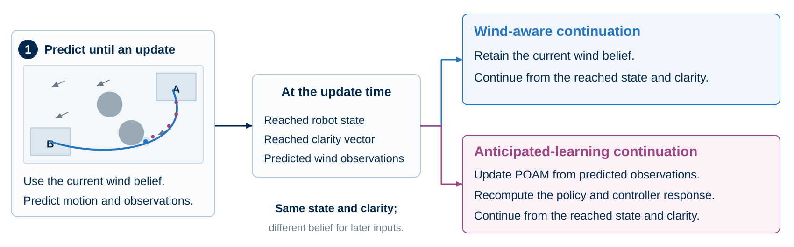
A predicted observation changes only the continuation after it becomes available. The robot state and clarity are carried forward.
Predict one observation and its belief update
At a scheduled sensing time, the predicted robot reaches position . In the chosen possible physical field , generate
Use that location and measurement in the same POAM update used during execution:
: belief before the observation. : belief after the observation. A batch is handled using all locations observed since the last update.
Example: an observation can reveal stronger crosswind than expected. Later predicted inputs then respond to that updated estimate.
The observation is generated from the possible field used for this trajectory. The controller learns about it only through the predicted measurement.
What changes after a predicted observation?
From the reached state , recompute the nominal request with the updated belief:
Nominal policy: wind compensation and other belief-dependent control decisions respond to .
Execution controller: recompute the design-policy value and input inequalities from .
Continuation: propagate the selected input under the same physical field, evolve clarity and predict later observations.
Keep the same policy parameters . The policy responds to new information; there is no nested MBD solve at each predicted update.
The anticipated-learning cost includes the initial motion, sensing and later continuation. The following slides express its benefit through matched predictions.
Two matched predictions define the value of learning
Fix one policy parameter vector . Each draw contains a physical field and an observation-noise stream. Both predictions use that field and the same initial state and clarity.
Fixed belief: retain throughout the prediction.
Anticipated learning: assimilate observations when available and continue from the reached state and clarity.
: learning reduces monitoring cost.
: learning increases monitoring cost.
Both costs cover the same full horizon, including the motion used to obtain information.
How often and how much does learning help?
Among the matched predictions, let count those with .
: estimated probability that learning helps.
: mean cost reduction among the predictions where learning helps. Set it to zero if .
Probability times conditional improvement gives the expected positive benefit.
These quantities describe one policy. They do not yet account for outcomes where its learning-dependent execution performs worse.
Signed learning value includes deterioration
The expected deterioration is
Subtract it from the positive benefit:
Illustrative cost differences
Interpretation
Helps
Helps
Harms
No change
Here , , , so .
A policy receives credit for beneficial outcomes and a penalty for deterioration.
Complete task cost with anticipated learning
Average the two matched full-horizon costs:
MBD minimizes . This includes the information-gathering motion and its later payoff.
Illustrative policy
Direct route
10
1
9
Detour to learn
14
4
10
Choose the direct route here. The detour has a larger learning value but a higher complete task cost.
Do not subtract learning value again from . That would count the benefit twice.
MBD now optimizes the complete monitoring prediction
The MBD decision is the nominal policy parameter vector: . A sampled policy parameter vector defines one policy whose cost is evaluated by the preceding prediction.
Here contains evaluable policy parameters satisfying the specified numerical feasibility checks. Normalize the weights to sum to one.
Wind-aware: uses the fixed-belief execution prediction.
Anticipated learning: includes chronological belief updates.
Use in the MBD score update from the preliminaries. Average costs across physical fields before exponentiating.
Weights act on nominal parameters. Executed trajectories supply the costs; they do not replace parameters in the weighted mean.
Follow one policy’s predicted execution
1Begin at the measured state
2Fix one sampled policy vector
3Predict the applied input
4Advance motion and clarity
5Generate a predicted observation
6Update the predicted wind belief
7Continue with the same parameters
8Complete the monitoring prediction
Schematic explanation of the algorithm, not a new mission result. Orange: nominal motion · Blue: predicted execution · Purple: predicted observation.
Turn predicted monitoring costs into the next action
1Evaluate every sampled policy vector
2Average across possible wind fields
3Normalize the policy weights
4Compute the score and denoise
5Repeat while diffusion levels remain
6Execute, observe and start a new call
Schematic algorithm walkthrough. The weighted mean updates MBD parameters; the selected evaluated policy is used for physical execution.
Finish optimization before physical execution
Read current information: robot state, clarity, wind belief, geometry and target clarity.
At each diffusion level: sample nominal policy parameter vectors.
Evaluate each vector: predict applied inputs, motion and clarity in possible wind fields. For anticipated learning, update the predicted belief when observations become available.
Refine: average complete learning-updated monitoring costs, compute parameter weights and apply the MBD score update. Repeat only while diffusion levels remain.
Execute: after the final level, select and check the lowest-cost evaluated vector; apply its policy for the next execution interval.
Replan: assimilate real measurements and start a new planning call from the measured state and belief.
End of method. The following comparison concerns MBD; concrete vehicle models and numerical settings are in the appendix.
Comparison with MBD
5
Retain the model-based score estimator; change what the model evaluates.
Algorithm comparison → unchanged components and method-specific components
Algorithm comparison: what changes inside MBD?
Pan et al.: trajectory optimization
Initialize noisy trajectory vector .
For , draw Gaussian decision-vector samples using the Gaussian proposal defined in the MBD preliminaries.
Roll out the control component to obtain dynamically feasible trajectories.
Compute task cost and constraint indicator .
Weight decision-vector samples by .
Estimate the score and update .
Wind-aware / anticipated-learning MBD
Initialize by adding forward-process noise to an evaluated initial policy parameter vector .
For , sample policy parameter vectors using the same Gaussian rule.
Predict the applied inputs, motion and clarity under wind. Proposed also updates the belief.
Average complete learning-updated costs: .
Weight valid, in-domain nominal parameters by .
Apply the same score update; retain the lowest-cost evaluated vector for checking and execution.
Adapted from Pan et al., Algorithm 2 with the proposal written consistently with Eq. (8). is the number of reverse levels; is the paper’s trajectory variable.
Relationship to the MBD paper
Component
Pan et al.: MBD
This method
Decision being optimized
Trajectory / control representation
Parameters of a nominal control policy
What the model predicts
Dynamically feasible trajectory
Wind-dependent executed motion and sensing
Cost used by the score
Task cost; feasibility factors enter the density
Cumulative executed clarity deficit
Information inside the rollout
Task-dependent model state
Robot state, clarity and current or predicted wind belief
Reverse refinement
Model-based score and MCSA
Same construction applied to nominal parameters
The first contribution is disturbance-aware task evaluation. Anticipated learning extends that evaluation to changing beliefs.
Pan et al., Sections 4.1–4.2. The short numerical search is an approximation, not a new convergence guarantee.
Results
6
Compare delivered monitoring in matched physical environments.
Wind-blind → wind-aware → wind-aware with anticipated learning
Three levels of planning awareness
Question asked during planning
Wind-blind
Wind-aware
Proposed
What motion is nominally informative?
Yes
Yes
Yes
How will wind and the execution controller alter that motion?
Not predicted
Predicted from current wind belief
Predicted from current wind belief
How will future observations change later motion?
Not predicted
Belief held fixed
Belief updated during prediction
First contribution: evaluate monitoring on predicted executed motion.
Extension: account for observations that change later execution.
All three use the wind-informed controller during real execution. The archived wind-blind baseline also omits nominal wind compensation.
Two environments with opposite wind directions
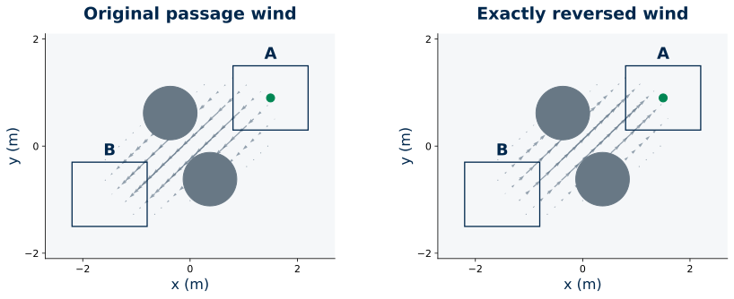
120 s missions · 10 s planning horizon · 2 s replanning
Matched initial state, clarity, task, survey and physical wind within each environment. Archived development runs; these predate the revised bounded MBD target. The signed-value equations decompose the chronological objective; no new mission is implied.
Environment 1: original A/B-region wind
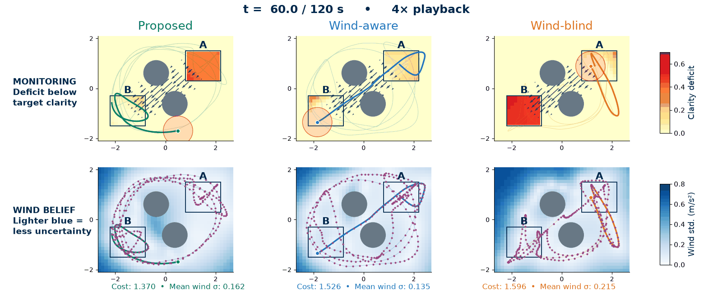
Proposed: 18.8% lower cost than wind-blind; 3.9% lower than wind-aware.
Top: monitoring deficit and wind arrows. Bottom: recorded wind uncertainty and observed locations. Fixed scales throughout.
Original wind: compare delivered monitoring
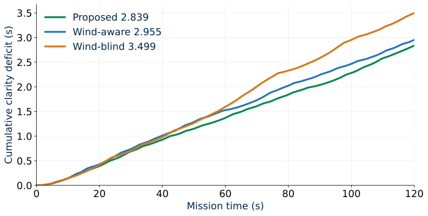
Integrated clarity deficit
2.839 Proposed
2.955 Wind-aware
3.499 Wind-blind
Completed A/B transfers 16 · 14 · 8, respectively
No physical contact in these three archived runs’ dense audits.
Environment 2: reversed wind
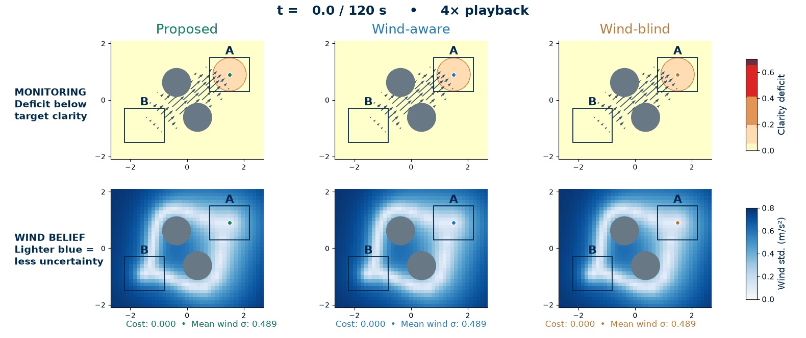
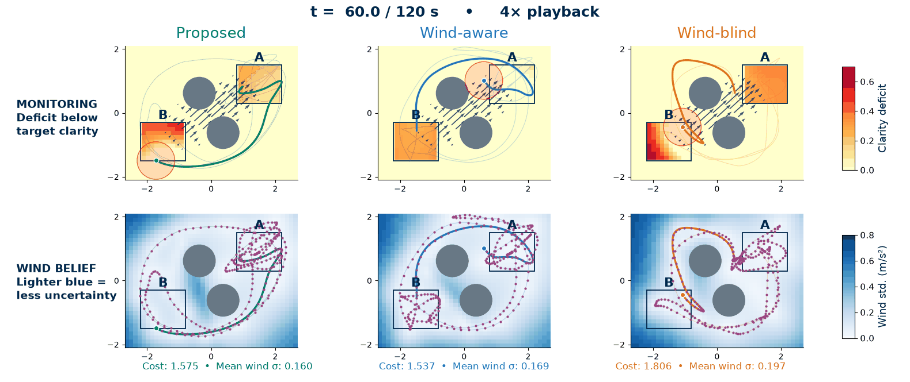
Proposed: 21.1% lower cost than wind-blind; 1.3% lower than wind-aware.
The entire physical wind field is reversed. Both color scales match Environment 1.
Reversed wind: the additional learning gain is smaller
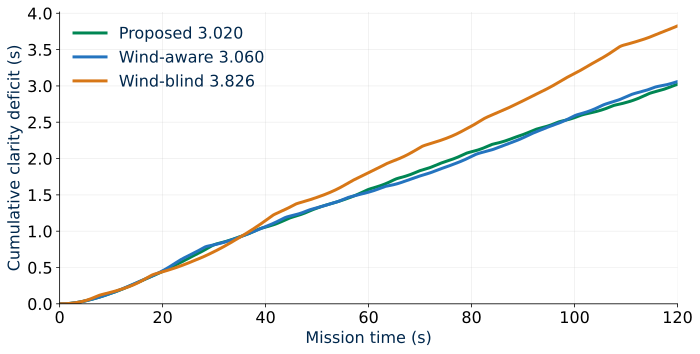
Proposed passage use
Original wind: one middle crossing, A to B.
Reversed wind: one middle crossing, B to A.
Fifteen other transfers use bypasses in each run.
The observed direction changes. Consistent exploitation of the middle passage is not established.
Separate the wind-aware gain from the learning gain
Recorded cost reduction
Original wind
Reversed wind
Wind-aware vs wind-blind
15.5%
20.0%
Proposed vs wind-aware
3.9%
1.3%
Proposed vs wind-blind
18.8%
21.1%
First contribution: predicting wind-dependent execution gives the larger contrast in these environments.
Extension: anticipating learning adds a smaller improvement in the displayed runs.
Descriptive comparisons from archived development runs. The wind-blind contrast also includes nominal wind compensation.
What the current evidence establishes
Supported by these runs
Wind-aware planning improves recorded monitoring over the historical wind-blind baseline.
Anticipated learning adds a smaller improvement in both primary environments.
These two archived missions do not establish a general learning advantage.
Still to establish
A consistent anticipation advantage across independent physical environments.
Full-mission performance of the revised numerical implementation.
Reliability across larger search budgets and richer policy parameterizations.
Method correctness, optimizer quality and experimental performance are separate questions.
Takeaways
1Plan for delivered monitoring. Use wind and the execution controller to predict where the robot can sense.
2Anticipate information through its effect on later motion. Update the predicted belief at scheduled observation times and continue the rollout.
3MBD optimizes this composed task model. The core score construction is retained; the policy evaluation becomes wind- and belief-aware.
Implementation appendix
A
Concrete simulation choices, kept separate from the generic method.
Implementation: the 18-dimensional policy representation
A reference trajectory specifies desired positions for the tracking controller. The implementation uses .
4 Initial acceleration parameters
8 Future reference-position parameters
6 Belief-response coefficients
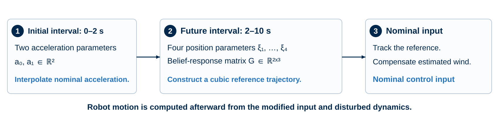
Bounded mappings convert the parameters to accelerations and reference positions. modifies future reference positions using wind-belief features, defined below.
Implementation: a planar tracking controller
The planar simulation specializes the generic robot model to
For the future reference :
: position and velocity. : known linear drag coefficient. : tracking gains. Dots on denote time derivatives.
: mean of the available wind belief. : componentwise actuator saturation. compensates drag and estimated wind.
Nominal wind compensation uses the estimated field. Predicted robot motion uses a possible physical field drawn from that belief.
The initial 2 s use the interpolated acceleration parameters instead of the reference-tracking terms. Defaults: , , .
Implementation: the velocity-damping design policy
To predict the implemented control modification, use the geometric constraint from the preliminaries and a fixed velocity-damping design policy:
: design policy used to evaluate future constraint values. : velocity-damping gain; here.
: nominal policy optimized for monitoring. is fixed and is not optimized by MBD.
Under mean wind and without saturation,
The design-policy prediction measures how current velocity and uncertain wind affect future constraint violation.
Construction inspired by Knoedler et al.’s policy-value approach. It supplies an approximate execution model within our planning objective.
Implementation: the planar input inequality
For , partition the value gradient into
The implemented inequality for obstacle or boundary becomes
Through the design-policy prediction: The wind belief changes the sampled trajectories, their largest constraint values , and the gradients .
Through instantaneous acceleration: The largest projected wind acceleration among the inner samples changes the right-hand side of the input inequality.
These changes alter the predicted control input, motion and sensing. The monitoring objective accounts for all three effects.
This row is obtained by substituting and into the preceding rate condition.
The matrix in the policy parameter vector maps wind-belief features to a reference-position adjustment.
: fixed central probe location. : two predicted wind components. : wind standard deviation.
: wind scale used to normalize features. : maximum reference shift. The shift deforms future knots; cubic interpolation creates a reference trajectory.
This parameterization can deform the reference trajectory. It does not represent every possible future route switch.
Implementation: a bounded target for parameter search
Set the unperturbed decision vector to and evaluate its cumulative clarity deficit .
: policy parameter domain in the revised implementation. : policy parameter vectors with finite cost and no detected sampled contact.
: one when its argument belongs to set , zero otherwise. : integral of the numerator; positive when valid finite-cost support has positive volume.
Average physical-field costs first. Use those costs to weight nominal parameters.
The executed controls and paths are outputs of the rollout. They are not substituted for in the weighted mean.
Appendix: covariance-only anticipation
For fixed sensing locations and fixed GP hyperparameters, one can predict covariance reduction:
: predicted executed measurement locations. : observation-noise covariance for that batch. : covariance after the hypothetical batch.
Keep the predicted mean at and rebuild the execution model using . This approximates learning without drawing measurement values.
The mean-fixed approximation captures changing uncertainty, but omits adaptation to different observed wind means.
This is a separate implementation mode. The result animations show the realization-based proposed method.
Appendix: sources and reproducibility
Problem and method
Naveed, Informative Planning with Task-Aware Spatial Disturbance Estimation: supplied manuscript, problem notation and clarity.
Pan et al., Model-Based Diffusion for Trajectory Optimization (2024), Eqs. (6), (8)–(10), Algorithm 2. Paper